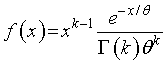

ガンマ分布
ガンマ分布と何か？と言われた場合には，定義として，
ガンマ分布はランダムなショックが何回か（k回）起ってはじめて故障する場合のモデル（オムロン）
という説明があります．
つまり，
ランダムな現象が複数回起こるまでにどのくらいの時間がかかるか？
というものだと思います．
その，計算式は，

となるようです（Wikipedia）
では，どのようにしてこの式を導出したのでしょう？
いろいろとネットを探しましたが，なかなか見つかりませんでしたが，やっと一つ見つけました．
WolframMathWorld
というあの有名な，Mathematica，を販売しているメーカーのサイトです．
式自体は簡単ですが，どうしてそうなるの？そもそもガンマ分布ってどういうモデルを意味するの？と言うところで，いろいろな先生方に相談させていただきました．
理化学研究所 発生・再生科学総合研究センター 柴田先生，西川先生
東北大学大学院情報科学研究科 システム情報科学専攻 尾畑先生
東北大学大学院情報科学研究科応用生命情報学講座 生命情報システム科学 木下先生，三浦先生
九州工業大学情報工学部生命情報工学科 入佐先生
の先生方に感謝します．
では，早速導出方法について考えていきましょう．